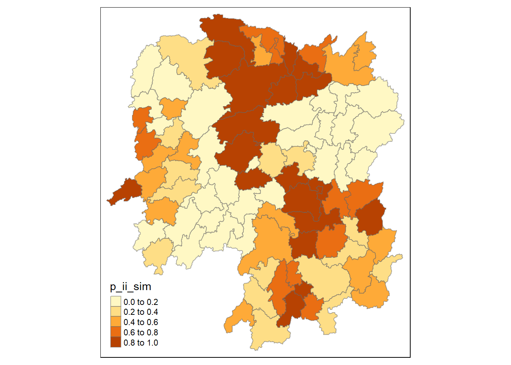
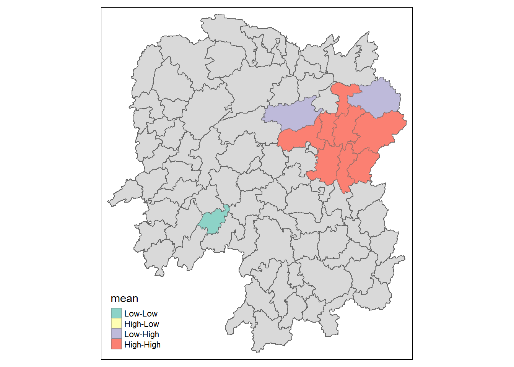

pacman::p_load(sf, tmap, sfdep, tidyverse)In Class Exercise 7
Important
We will be using sfdep in In-Class-Excercise instead of spded in Hands On Excercise
1 Loading the packages
2 The data
2.1 Importing the Geospatial data
Note
This file is loaded as a sf dataframe
hunan <- st_read(dsn = "data/geospatial",
layer = "Hunan")Reading layer `Hunan' from data source
`C:\hxchen-2019\birdie\lessons\In-class\in-class_ex7\data\geospatial'
using driver `ESRI Shapefile'
Simple feature collection with 88 features and 7 fields
Geometry type: POLYGON
Dimension: XY
Bounding box: xmin: 108.7831 ymin: 24.6342 xmax: 114.2544 ymax: 30.12812
Geodetic CRS: WGS 842.2 Importing GeoSpatial
Note
This input is recorded as tibble dataframe
hunan2012 <- read_csv("data/aspatial/Hunan_2012.csv")2.2.1 Combining both data frame by using left join
Note
In order to retain the geospatial properties, the left data frame must be the sf data frame.
We need to make sure that the name is the same, it is Case-Sensitive!!
hunan_GDPPC <- left_join(hunan,hunan2012)%>%
select(1:4, 7, 15)2.2.2 Plotting a Choropleth map
tmap_mode("plot")
tm_shape(hunan_GDPPC) +
tm_fill("GDPPC",
style = "quantile",
palette = "Blues",
title = "GDPPC") +
tm_layout(main.title = "Distribution of GDP per capita by district, Hunan Province",
main.title.position = "center",
main.title.size = 1.2,
legend.height = 0.45,
legend.width = 0.35,
frame = TRUE) +
tm_borders(alpha = 0.5) +
tm_compass(type="8star", size = 2) +
tm_scale_bar() +
tm_grid(alpha = 0.2)
2.3 Identify area Neighbours
2.3.1 Calculating Contiguit neighbour methods
Note
The code junk below uses st_contiguity is used to derive a contiguity neighbour list using Queen’s method.
The code chunk below will store the results into a new sf data frame at the first column (.before = 1_
2.3.2 Queens Methods
nb_queen <- hunan_GDPPC %>%
mutate(nb = st_contiguity(geometry),
.before = 1)summary(nb_queen$nb)Neighbour list object:
Number of regions: 88
Number of nonzero links: 448
Percentage nonzero weights: 5.785124
Average number of links: 5.090909
Link number distribution:
1 2 3 4 5 6 7 8 9 11
2 2 12 16 24 14 11 4 2 1
2 least connected regions:
30 65 with 1 link
1 most connected region:
85 with 11 linksWe can view the first 10 values
nb_queenSimple feature collection with 88 features and 7 fields
Geometry type: POLYGON
Dimension: XY
Bounding box: xmin: 108.7831 ymin: 24.6342 xmax: 114.2544 ymax: 30.12812
Geodetic CRS: WGS 84
First 10 features:
nb NAME_2 ID_3 NAME_3 ENGTYPE_3
1 2, 3, 4, 57, 85 Changde 21098 Anxiang County
2 1, 57, 58, 78, 85 Changde 21100 Hanshou County
3 1, 4, 5, 85 Changde 21101 Jinshi County City
4 1, 3, 5, 6 Changde 21102 Li County
5 3, 4, 6, 85 Changde 21103 Linli County
6 4, 5, 69, 75, 85 Changde 21104 Shimen County
7 67, 71, 74, 84 Changsha 21109 Liuyang County City
8 9, 46, 47, 56, 78, 80, 86 Changsha 21110 Ningxiang County
9 8, 66, 68, 78, 84, 86 Changsha 21111 Wangcheng County
10 16, 17, 19, 20, 22, 70, 72, 73 Chenzhou 21112 Anren County
County GDPPC geometry
1 Anxiang 23667 POLYGON ((112.0625 29.75523...
2 Hanshou 20981 POLYGON ((112.2288 29.11684...
3 Jinshi 34592 POLYGON ((111.8927 29.6013,...
4 Li 24473 POLYGON ((111.3731 29.94649...
5 Linli 25554 POLYGON ((111.6324 29.76288...
6 Shimen 27137 POLYGON ((110.8825 30.11675...
7 Liuyang 63118 POLYGON ((113.9905 28.5682,...
8 Ningxiang 62202 POLYGON ((112.7181 28.38299...
9 Wangcheng 70666 POLYGON ((112.7914 28.52688...
10 Anren 12761 POLYGON ((113.1757 26.82734...Lets review the name of the neighbouring polygons
nb_queen$County[c(2,3,4,57,85)][1] "Hanshou" "Jinshi" "Li" "Nan" "Taoyuan"2.3.3 Rooks Methods
nb_rook <- hunan_GDPPC %>%
mutate(nb = st_contiguity(geometry,
queen = FALSE),
.before = 1)2.3.4 Indentifying Higher order neighbours
nb2_queen <- hunan_GDPPC %>%
mutate(nb = st_contiguity(geometry),
nb2 = st_nb_lag_cumul(nb, 2),
.before = 1)nb2_queenSimple feature collection with 88 features and 8 fields
Geometry type: POLYGON
Dimension: XY
Bounding box: xmin: 108.7831 ymin: 24.6342 xmax: 114.2544 ymax: 30.12812
Geodetic CRS: WGS 84
First 10 features:
nb
1 2, 3, 4, 57, 85
2 1, 57, 58, 78, 85
3 1, 4, 5, 85
4 1, 3, 5, 6
5 3, 4, 6, 85
6 4, 5, 69, 75, 85
7 67, 71, 74, 84
8 9, 46, 47, 56, 78, 80, 86
9 8, 66, 68, 78, 84, 86
10 16, 17, 19, 20, 22, 70, 72, 73
nb2
1 2, 3, 4, 5, 6, 32, 56, 57, 58, 64, 69, 75, 76, 78, 85
2 1, 3, 4, 5, 6, 8, 9, 32, 56, 57, 58, 64, 68, 69, 75, 76, 78, 85
3 1, 2, 4, 5, 6, 32, 56, 57, 69, 75, 78, 85
4 1, 2, 3, 5, 6, 57, 69, 75, 85
5 1, 2, 3, 4, 6, 32, 56, 57, 69, 75, 78, 85
6 1, 2, 3, 4, 5, 32, 53, 55, 56, 57, 69, 75, 78, 85
7 9, 19, 66, 67, 71, 73, 74, 76, 84, 86
8 2, 9, 19, 21, 31, 32, 34, 35, 36, 41, 45, 46, 47, 56, 58, 66, 68, 74, 78, 80, 84, 85, 86
9 2, 7, 8, 19, 21, 35, 46, 47, 56, 58, 66, 67, 68, 74, 76, 78, 80, 84, 85, 86
10 11, 14, 15, 16, 17, 18, 19, 20, 21, 22, 23, 70, 71, 72, 73, 74, 82, 83, 86
NAME_2 ID_3 NAME_3 ENGTYPE_3 County GDPPC
1 Changde 21098 Anxiang County Anxiang 23667
2 Changde 21100 Hanshou County Hanshou 20981
3 Changde 21101 Jinshi County City Jinshi 34592
4 Changde 21102 Li County Li 24473
5 Changde 21103 Linli County Linli 25554
6 Changde 21104 Shimen County Shimen 27137
7 Changsha 21109 Liuyang County City Liuyang 63118
8 Changsha 21110 Ningxiang County Ningxiang 62202
9 Changsha 21111 Wangcheng County Wangcheng 70666
10 Chenzhou 21112 Anren County Anren 12761
geometry
1 POLYGON ((112.0625 29.75523...
2 POLYGON ((112.2288 29.11684...
3 POLYGON ((111.8927 29.6013,...
4 POLYGON ((111.3731 29.94649...
5 POLYGON ((111.6324 29.76288...
6 POLYGON ((110.8825 30.11675...
7 POLYGON ((113.9905 28.5682,...
8 POLYGON ((112.7181 28.38299...
9 POLYGON ((112.7914 28.52688...
10 POLYGON ((113.1757 26.82734...2.4 Computing contiguity weights
2.4.1 Queens Method
wm_q <- hunan_GDPPC %>%
mutate(nb = st_contiguity(geometry),
wt = st_weights(nb,
style = "W"),
.before = 1) wm_qSimple feature collection with 88 features and 8 fields
Geometry type: POLYGON
Dimension: XY
Bounding box: xmin: 108.7831 ymin: 24.6342 xmax: 114.2544 ymax: 30.12812
Geodetic CRS: WGS 84
First 10 features:
nb
1 2, 3, 4, 57, 85
2 1, 57, 58, 78, 85
3 1, 4, 5, 85
4 1, 3, 5, 6
5 3, 4, 6, 85
6 4, 5, 69, 75, 85
7 67, 71, 74, 84
8 9, 46, 47, 56, 78, 80, 86
9 8, 66, 68, 78, 84, 86
10 16, 17, 19, 20, 22, 70, 72, 73
wt
1 0.2, 0.2, 0.2, 0.2, 0.2
2 0.2, 0.2, 0.2, 0.2, 0.2
3 0.25, 0.25, 0.25, 0.25
4 0.25, 0.25, 0.25, 0.25
5 0.25, 0.25, 0.25, 0.25
6 0.2, 0.2, 0.2, 0.2, 0.2
7 0.25, 0.25, 0.25, 0.25
8 0.1428571, 0.1428571, 0.1428571, 0.1428571, 0.1428571, 0.1428571, 0.1428571
9 0.1666667, 0.1666667, 0.1666667, 0.1666667, 0.1666667, 0.1666667
10 0.125, 0.125, 0.125, 0.125, 0.125, 0.125, 0.125, 0.125
NAME_2 ID_3 NAME_3 ENGTYPE_3 County GDPPC
1 Changde 21098 Anxiang County Anxiang 23667
2 Changde 21100 Hanshou County Hanshou 20981
3 Changde 21101 Jinshi County City Jinshi 34592
4 Changde 21102 Li County Li 24473
5 Changde 21103 Linli County Linli 25554
6 Changde 21104 Shimen County Shimen 27137
7 Changsha 21109 Liuyang County City Liuyang 63118
8 Changsha 21110 Ningxiang County Ningxiang 62202
9 Changsha 21111 Wangcheng County Wangcheng 70666
10 Chenzhou 21112 Anren County Anren 12761
geometry
1 POLYGON ((112.0625 29.75523...
2 POLYGON ((112.2288 29.11684...
3 POLYGON ((111.8927 29.6013,...
4 POLYGON ((111.3731 29.94649...
5 POLYGON ((111.6324 29.76288...
6 POLYGON ((110.8825 30.11675...
7 POLYGON ((113.9905 28.5682,...
8 POLYGON ((112.7181 28.38299...
9 POLYGON ((112.7914 28.52688...
10 POLYGON ((113.1757 26.82734...2.5 Computing Global Moran’s I
Note
We usually do not perform a Moran Step by itself, we usually perform the global Moran Test
moranI <- global_moran(wm_q$GDPPC,
wm_q$nb,
wm_q$wt)2.6 Performing Global Moran’I test
global_moran_test(wm_q$GDPPC,
wm_q$nb,
wm_q$wt)
Moran I test under randomisation
data: x
weights: listw
Moran I statistic standard deviate = 4.7351, p-value = 1.095e-06
alternative hypothesis: greater
sample estimates:
Moran I statistic Expectation Variance
0.300749970 -0.011494253 0.004348351 We have enough statistical evidence to reject the null hypothesis that the GDP is spatially independence. If we refer to the Moran I value is positive, therefore it shows signs that is it 00.
2.6.1 Peroforming Global Moran’s I permutation Test
Note
Must perform Set seed to ensure reproducibility.
set.seed(1234)If the dataset is small, we can increase teh number of simulation for stability.
global_moran_perm(wm_q$GDPPC,
wm_q$nb,
wm_q$wt,
nsim = 99)
Monte-Carlo simulation of Moran I
data: x
weights: listw
number of simulations + 1: 100
statistic = 0.30075, observed rank = 100, p-value < 2.2e-16
alternative hypothesis: two.sided2.7 Computing Local Moran’s I
Without the unnest, if you tried to plot it, we will not be able to plot it.
lisa <- wm_q %>%
mutate(local_moran = local_moran(GDPPC,nb,wt,nsim=99),
.before = 1) %>%
unnest(local_moran)
lisaSimple feature collection with 88 features and 20 fields
Geometry type: POLYGON
Dimension: XY
Bounding box: xmin: 108.7831 ymin: 24.6342 xmax: 114.2544 ymax: 30.12812
Geodetic CRS: WGS 84
# A tibble: 88 × 21
ii eii var_ii z_ii p_ii p_ii_…¹ p_fol…² skewn…³ kurtosis
<dbl> <dbl> <dbl> <dbl> <dbl> <dbl> <dbl> <dbl> <dbl>
1 -0.00147 0.00177 4.18e-4 -0.158 0.874 0.82 0.41 -0.812 0.652
2 0.0259 0.00641 1.05e-2 0.190 0.849 0.96 0.48 -1.09 1.89
3 -0.0120 -0.0374 1.02e-1 0.0796 0.937 0.76 0.38 0.824 0.0461
4 0.00102 -0.0000349 4.37e-6 0.506 0.613 0.64 0.32 1.04 1.61
5 0.0148 -0.00340 1.65e-3 0.449 0.654 0.5 0.25 1.64 3.96
6 -0.0388 -0.00339 5.45e-3 -0.480 0.631 0.82 0.41 0.614 -0.264
7 3.37 -0.198 1.41e+0 3.00 0.00266 0.08 0.04 1.46 2.74
8 1.56 -0.265 8.04e-1 2.04 0.0417 0.08 0.04 0.459 -0.519
9 4.42 0.0450 1.79e+0 3.27 0.00108 0.02 0.01 0.746 -0.00582
10 -0.399 -0.0505 8.59e-2 -1.19 0.234 0.28 0.14 -0.685 0.134
# … with 78 more rows, 12 more variables: mean <fct>, median <fct>,
# pysal <fct>, nb <nb>, wt <list>, NAME_2 <chr>, ID_3 <int>, NAME_3 <chr>,
# ENGTYPE_3 <chr>, County <chr>, GDPPC <dbl>, geometry <POLYGON [°]>, and
# abbreviated variable names ¹p_ii_sim, ²p_folded_sim, ³skewnessIn General the Mean and the Pysal is the same, Use either Mean or Pysal. If we are using R, we use Mean. Pysal is the python method of processing.
It is the safest if we use mean. Median might be a better measure to use if the data does not follow a normal distribution.
2.8 Visualising Local Morans’ I
tmap_mode("plot")
tm_shape(lisa) +
tm_fill("ii") +
tm_borders(alpha = 0.5) +
tm_view(set.zoom.limits=c(6,8))
tmap_mode("plot")
tm_shape(lisa) +
tm_fill("p_ii_sim") +
tm_borders(alpha = 0.5) +
tm_view(set.zoom.limits=c(6,8))
We should use p_ii_sim or p_folded_sim, to plot the simulation, as those values are where the simulation are used.
lisa_sig <- lisa %>%
filter(p_ii <0.05)This is not a good way to do so, can make use of the Hands-On Exercise Code to show how the grey area as insignificant areas.
There is no need to use LISA.
tmap_mode("plot")
tm_shape(lisa) +
tm_polygons() +
tm_borders(alpha = 0.5) +
tm_shape(lisa_sig) +
tm_fill("mean") +
tm_borders(alpha=0.4)
3 Hot Spot and Cold Sppot Area Analysis
In general we will be using GStar
HCSA <- wm_q %>%
mutate(local_Gi = local_gstar_perm(GDPPC, nb, wt, nsim =99),
.before = 1) %>%
unnest(local_Gi)
HCSASimple feature collection with 88 features and 16 fields
Geometry type: POLYGON
Dimension: XY
Bounding box: xmin: 108.7831 ymin: 24.6342 xmax: 114.2544 ymax: 30.12812
Geodetic CRS: WGS 84
# A tibble: 88 × 17
gi_star e_gi var_gi p_value p_sim p_fol…¹ skewn…² kurto…³ nb wt
<dbl> <dbl> <dbl> <dbl> <dbl> <dbl> <dbl> <dbl> <nb> <lis>
1 -0.00567 0.0115 0.00000812 9.95e-1 0.82 0.41 1.03 1.23 <int> <dbl>
2 -0.235 0.0110 0.00000581 8.14e-1 1 0.5 0.912 1.05 <int> <dbl>
3 0.298 0.0114 0.00000776 7.65e-1 0.7 0.35 0.455 -0.732 <int> <dbl>
4 0.145 0.0121 0.0000111 8.84e-1 0.64 0.32 0.900 0.726 <int> <dbl>
5 0.356 0.0113 0.0000119 7.21e-1 0.64 0.32 1.08 1.31 <int> <dbl>
6 -0.480 0.0116 0.00000706 6.31e-1 0.82 0.41 0.364 -0.676 <int> <dbl>
7 3.66 0.0116 0.00000825 2.47e-4 0.02 0.01 0.909 0.664 <int> <dbl>
8 2.14 0.0116 0.00000714 3.26e-2 0.16 0.08 1.13 1.48 <int> <dbl>
9 4.55 0.0113 0.00000656 5.28e-6 0.02 0.01 1.36 4.14 <int> <dbl>
10 1.61 0.0109 0.00000341 1.08e-1 0.18 0.09 0.269 -0.396 <int> <dbl>
# … with 78 more rows, 7 more variables: NAME_2 <chr>, ID_3 <int>,
# NAME_3 <chr>, ENGTYPE_3 <chr>, County <chr>, GDPPC <dbl>,
# geometry <POLYGON [°]>, and abbreviated variable names ¹p_folded_sim,
# ²skewness, ³kurtosistmap_mode("plot")
tm_shape(HCSA) +
tm_fill("gi_star") +
tm_borders(alpha = 0.5) +
tm_view(set.zoom.limits=c(6,8))
This map might not be that useful, we want to see those that are smaller 0.05. It is better to plot significant levels
tmap_mode("plot")
tm_shape(HCSA) +
tm_fill("p_sim") +
tm_borders(alpha = 0.5) +
tm_view(set.zoom.limits=c(6,8))
3.1 Peroforming Emerging Hotspot Analysis
We need to arrange to something similar to the Hunan_GDPPC for performing Emerging Hotspot Analysis.
pacman::p_load(sf, sfdep, tmap, plotly, tidyverse, zoo, Kendall)3.2 Importing the Darta
GDPPC <- read_csv("data/aspatial/Hunan_GDPPC.csv")GDPPC_st <- spacetime(GDPPC, hunan,
.loc_col = "County",
.time_col = "Year")3.2.1 Analysis
GDPPC_nb <- GDPPC_st %>%
activate("geometry") %>%
mutate(nb = include_self(st_contiguity(geometry)),
wt=st_weights(nb)
) %>%
set_nbs("nb") %>%
set_wts("wt")gi_stars <-GDPPC_nb %>%
group_by(Year) %>%
mutate(gi_star = local_gstar_perm(GDPPC, nb, wt, nsim=99)) %>%
tidyr::unnest(gi_star)3.3 Mann_Kendall Test
cbg <- gi_stars %>%
ungroup() %>%
filter(County=="Changsha") |>
select(County, Year, gi_star)ehsa <- emerging_hotspot_analysis(
x=GDPPC_st,
.var = "GDPPC",
k =1,
nsim = 99
)